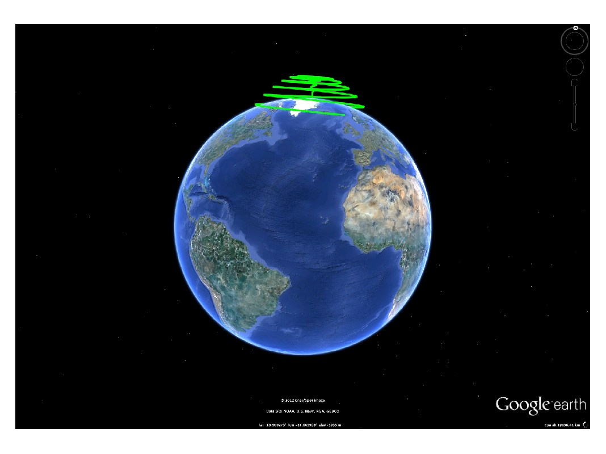

kml.plot3
Create 3D plot of longitude vs. latitude vs. altitude. Similar to the built-in plot function.
Contents
Syntax
kml.plot3(long, lat, alt) kml.plot3(...,'PropertyName',PropertyValue,...)
Description
Creates a 3D plot of longitude vs. latitude vs. altitude, similar to the built-in plot function.
The units for latitude and longitude are normally given in degrees, but this can be changed by calling: kml.useDegrees; or kml.useRadians; before plotting. Altitude is always given in meters.
It is possible to fine tune the plot3 properties using name-value pairs:
kml.plot(...,'PropertyName',PropertyValue,...)
Properties
| Property Name | Type | Description |
|---|---|---|
| 'name' | string | Name of the plot inside the kml file |
| 'id' | string | Internal id of this plot inside the kml |
| 'description' | string | A short description of what the plot represents |
| 'visibility' | true/false | Control the initial visibility of the plot |
| 'lineColor' | kml color string | Defines the color of the line. Must be a valid hex color string input, in the style AABBGGRR |
| 'polyColor' | kml color string | Defines the color of the extruded polygon, if 'extrude' is set to true. Must be a valid hex color string input, in the style AABBGGRR |
| 'lineWidth' | double | Defines the width of the line. Set to zero to show no line. |
| 'altitudeMode' | string | Choose if the altitude value is absolute to the earth model, relative to the ground level, or should be clamped to the ground. Valid inputs: 'absolute', 'relativeToGround', 'clampToGround' |
| 'extrude' | true/false | Enables or disables extruding the line to the ground. |
| 'tessellate' | true/false | Tesselates the line into the ground, so that it will be visible within the terrain contour |
| 'timeStamp' | kml date string | Associates the plot to a moment in time. Should not be used together with timeSpan. Should be a string in the XML time format (more information available here) |
| 'timeSpanBegin' | kml date string | Defines the moment in time where the plot starts to exist. Should not be used together with timeStamp. Should be a string in the XML time format (more information available here) |
| 'timeSpanEnd' | kml date string | Defines the moment in time where the plot finishes to exist. Should not be used together with timeStamp. Should be a string in the XML time format (more information available here) |
Example
% Create a new kml object k = kml('my kml file'); % Plot a sample 3D curve to the kml t = linspace(0,360,1000); k.plot3(10*t, 90*cosd(t/8), sind(t/2)*1e6, 'altitudeMode','absolute','lineWidth',5,'lineColor','FF00FF00', 'name','plot3 test'); % Save the kml and open it in Google Earth k.run;
This is the result of running this example:
This file is part of the kml toolbox. Copyright 2012 Rafael Fernandes de Oliveira (rafael@rafael.aero)